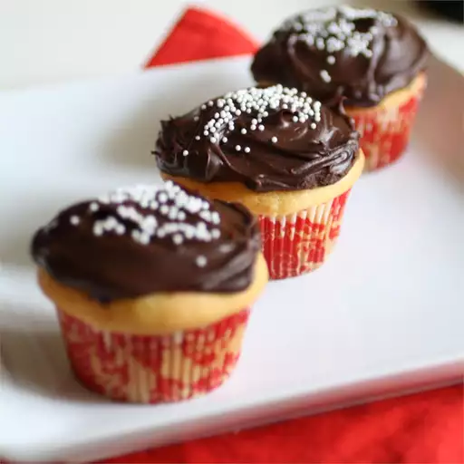

Cupcakes recipe

Cupcakes are small, individual-sized cakes, often topped with sweet frosting or icing,
making them a delightful and portable treat for any occasion.
Their versatility allows for a wide range of flavors and creative decorations.
Ingredients
- 1 ¼ cups all-purpose flour
- ¾ teaspoon baking soda
- 1 pinch salt
- 5 tablespoons butter, cut into pieces
- ⅔ cup milk
- 1 cup white sugar
- 2 eggs
- 1 egg yolk
- 1 teaspoon vanilla extract
Steps
-
Preheat an oven to 350 degrees F (175 degrees C).
Line a standard muffin tin with 12 paper cupcake liners.
Combine flour, baking soda, and salt in a bowl; set aside.
-
Heat the butter and milk in a small saucepan over low heat until the butter has melted.
Beat the sugar, eggs, egg yolk, and vanilla with an electric mixer in a large bowl until
it has thickened slightly and is lighter in color. Gradually beat in the flour mixture on
low speed until just incorporated. Slowly pour in the hot milk, beating until just combined.
-
Divide batter evenly between cupcake liners. Bake until toothpick inserted into center comes
out clean, about 20 minutes. Cool cupcakes in pan for 10 minutes. Transfer cupcakes to a
cooling rack to cool completely.